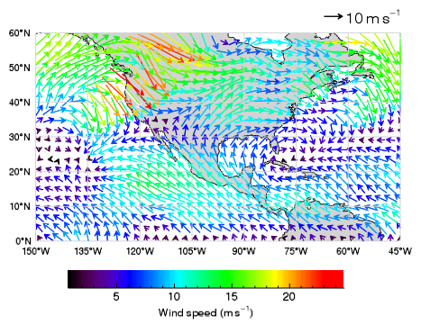

The VECTOR function allows you to draw vectors or wind barbs in a graphic. The following example displays global wind vector data over a global map with continental outlines.

The following code creates the graphic at the right. You can copy the entire block and paste it into the IDL command line to run it.
; Read the data.
RESTORE, FILEPATH('globalwinds.dat', SUBDIR=['examples','data'])
; Set up the map projection, grid, and continents.
m = MAP('Equirectangular', LIMIT=[0,-150,60,-45], $
LABEL_POSITION=0, LABEL_ANGLE=0, $
COLOR='light gray', LABEL_COLOR='black')
cont = MAPCONTINENTS(FILL_COLOR='light gray')
; Display the vector data on top of the map.
vec = VECTOR(u, v, x, y, /OVERPLOT, $
MIN_VALUE=0, MAX_VALUE=25, $
RGB_TABLE=39, AUTO_COLOR=1, LENGTH_SCALE=2)
l = Legend(SAMPLE_MAGNITUDE=10, UNITS='$m s^{-1}$', $
POSITION=m.MapForward(-45,61), /DATA, $
VERTICAL_ALIGNMENT='bottom')
c = Colorbar(TARGET=vec, POSITION=[0.2,0.1,0.8,0.15], $
TITLE='Wind speed $(m s^{-1})$')